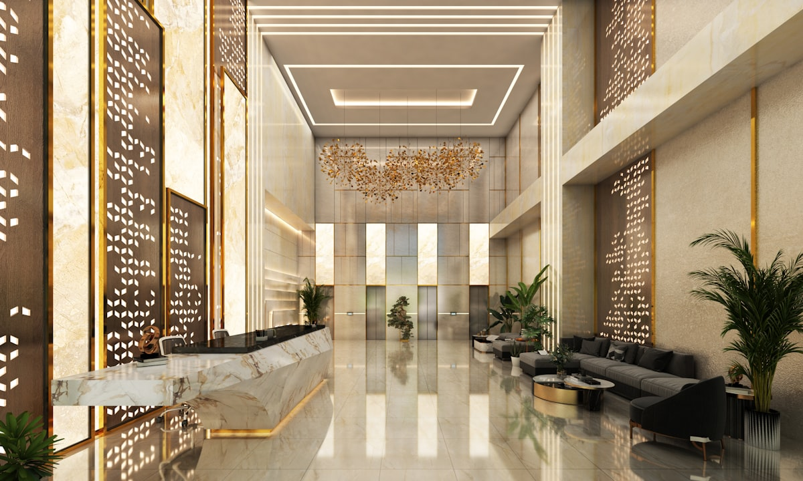
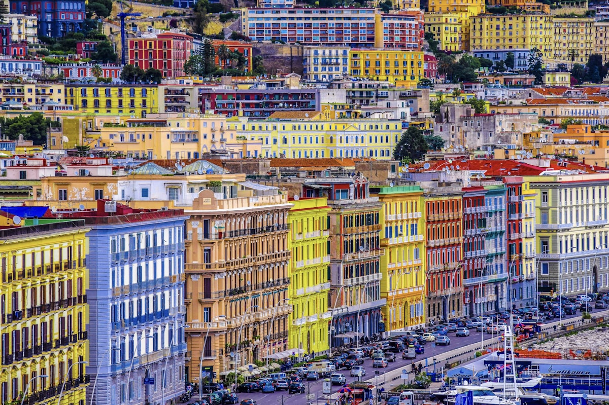

Quando si parla di riqualificazione urbana nel Nord-Est, un progetto spicca su tutti per ambizione, velocita' di esecuzione e ritorno sull'investimento: Ca' Marcello, il complesso turistico-alberghiero sorto a Mestre sulle ceneri di un'area industriale dismessa. Un investimento da 70 milioni di euro, completato in soli 22 mesi, che ha ridisegnato un intero quartiere e offre oggi un modello concreto per chi opera nel mercato immobiliare veneto.
In questo articolo analizziamo il progetto nei dettagli: dai numeri alle scelte architettoniche, dalla strategia degli sviluppatori alle lezioni che possiamo trarre per investimenti immobiliari nella provincia di Padova.
Il progetto: da capannoni industriali a polo turistico
L'area di Ca' Marcello si trovava in una posizione strategica nel cuore di Mestre, compresa tra via Ca' Marcello, la linea ferroviaria e il cavalcavia. Per decenni era stata occupata da capannoni industriali in disuso, un paesaggio degradato che rappresentava una ferita urbana in pieno centro.
Nel 2017, la societa' austriaca MTK Developments ha avviato un progetto di sostituzione edilizia radicale: demolizione completa dei capannoni preesistenti e nuova edificazione con tecniche costruttive industrializzate, che hanno permesso tempi di realizzazione straordinariamente rapidi.

Il progetto architettonico, firmato dallo studio Luciano Parenti di Venezia, ha saputo coniugare funzionalita' ricettiva e qualita' urbana, creando un insieme armonioso che non si limita alle strutture alberghiere ma dialoga con il tessuto cittadino attraverso spazi pubblici e servizi per i residenti.
Le strutture ricettive: 4 hotel e 2.000 posti letto
Il cuore del complesso Ca' Marcello e' costituito da quattro hotel e un ostello, per un totale di circa 2.000 posti letto. La struttura di punta e' il Leonardo Royal Venice Mestre, un 4 stelle superior con 244 camere che ha rapidamente scalato le classifiche di gradimento su tutte le principali piattaforme di prenotazione.
| Struttura | Categoria | Camere/Posti | Apertura |
|---|---|---|---|
| Leonardo Royal Venice Mestre | 4 stelle superior | 244 camere | Giugno 2019 |
| Hotel 2 | 3-4 stelle | ~150 camere | Luglio 2019 |
| Hotel 3 | 3 stelle | ~120 camere | Luglio 2019 |
| Hotel 4 | 3 stelle | ~100 camere | Luglio 2019 |
| Ostello | Ostello | ~200 posti letto | Luglio 2019 |
Il complesso include inoltre spazi congressuali modulari e un ristorante aperto al pubblico, scelta strategica che ha permesso di integrare la struttura nel tessuto sociale del quartiere evitando l'effetto "enclave turistica".
Servizi e infrastrutture: molto piu' di un hotel
Cio' che distingue Ca' Marcello da un semplice insediamento alberghiero e' l'attenzione ai servizi pubblici e alla vivibilita' urbana:
- 2 parcheggi multipiano con 519 posti auto e 96 posti moto, risolvendo una criticita' cronica della zona
- Piazza pubblica pedonale, nuovo punto di aggregazione per residenti e turisti
- Aree verdi e pista ciclabile integrata nel network urbano
- Spazi commerciali a piano terra per attivita' di vicinato
- Area giochi per bambini
- Collegamento diretto con la stazione ferroviaria di Mestre (5 minuti a piedi)

Timeline e sviluppatori
La velocita' di realizzazione e' uno degli aspetti piu' impressionanti del progetto:
- Fine 2017: avvio demolizioni e bonifica dell'area
- 2018: costruzione con tecniche industrializzate (prefabbricazione modulare)
- Giugno 2019: apertura del primo hotel (Leonardo Royal)
- Luglio 2019: completamento e apertura di tutte le strutture
- 2019: vendita dell'intero complesso a Deka Immobilien (Germania)
Il passaggio di proprieta' a Deka Immobilien, uno dei principali fondi immobiliari tedeschi, conferma la solidita' dell'investimento e l'attrattivita' del mercato ricettivo veneto per il capitale istituzionale europeo.
Perche' 22 mesi sono un record?
Per un progetto di questa complessita' — demolizione, bonifica, costruzione di 5 strutture ricettive, 2 parcheggi multipiano, piazza e infrastrutture — i tempi medi italiani si aggirano sui 4-6 anni. MTK Developments ha ottenuto questo risultato grazie a:
- Edilizia industrializzata con componenti prefabbricati
- Progettazione integrata (architettura + impianti + interni in parallelo)
- Gestione di cantiere con metodologia nordeuropea
- Accordi preventivi con gli operatori alberghieri
I numeri dell'investimento
| Parametro | Valore |
|---|---|
| Investimento totale | ~70 milioni di euro |
| Superficie complessiva | 16.000 mq |
| Posti letto totali | ~2.000 |
| Posti auto | 519 + 96 moto |
| Tempi di realizzazione | 22 mesi (2017-2019) |
| Costo per mq | ~4.375 €/mq |
| Rendimento locazioni Veneto (media) | 5,8% |
| Sviluppatore | MTK Developments (Austria) |
| Progettista | Studio Luciano Parenti (Venezia) |
| Acquirente finale | Deka Immobilien (Germania) |
Lezioni per il mercato immobiliare di Padova
Ca' Marcello non e' solo un caso di studio interessante: e' un modello direttamente replicabile nel territorio padovano, dove non mancano le condizioni per operazioni simili.
1. Le aree industriali dismesse sono opportunita'
La provincia di Padova e' ricca di ex aree industriali e capannoni in disuso, molti dei quali finiscono all'asta a prezzi significativamente inferiori al valore di mercato del terreno edificabile. La sostituzione edilizia — da industriale a ricettivo o residenziale — puo' generare rendimenti importanti, come dimostra Ca' Marcello.
2. La vicinanza a Venezia come leva
A soli 30 km da Padova, Ca' Marcello sfrutta il flusso turistico di Venezia offrendo un'alternativa piu' accessibile. Lo stesso meccanismo puo' funzionare per Padova: la citta' e' collegata a Venezia in 25 minuti di treno e ha un suo patrimonio culturale (Cappella degli Scrovegni, Orto Botanico, Prato della Valle) che attira un turismo crescente.
3. I rendimenti del ricettivo in Veneto
Con un rendimento medio delle locazioni turistiche in Veneto del 5,8%, il settore ricettivo offre ritorni superiori alla media nazionale. Le strutture ben posizionate vicino a nodi ferroviari — come nel caso di Ca' Marcello — beneficiano di tassi di occupazione elevati tutto l'anno.
4. Aste immobiliari: l'accesso privilegiato
Molte aree industriali dismesse nella provincia di Padova sono disponibili attraverso aste giudiziarie, con sconti che possono raggiungere il 40-60% rispetto ai valori di mercato. Un esempio concreto e' il lotto a Villafranca Padovana, dove capannoni industriali in asta rappresentano potenziali progetti di riqualificazione con margini significativi.
La nostra esperienza nelle aste
In Righetto Immobiliare seguiamo da anni gli investitori nelle acquisizioni tramite asta giudiziaria di immobili commerciali e industriali nella provincia di Padova. Dalla ricerca dell'immobile alla due diligence, dalla partecipazione in asta alla gestione della riqualificazione: offriamo un servizio completo per trasformare opportunita' come queste in investimenti redditizi.